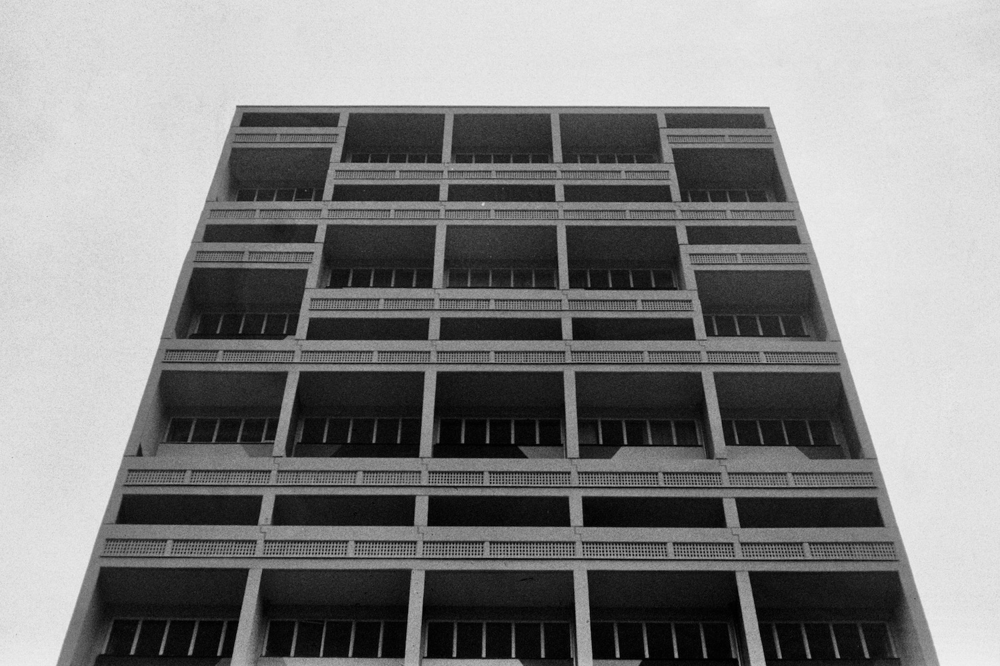
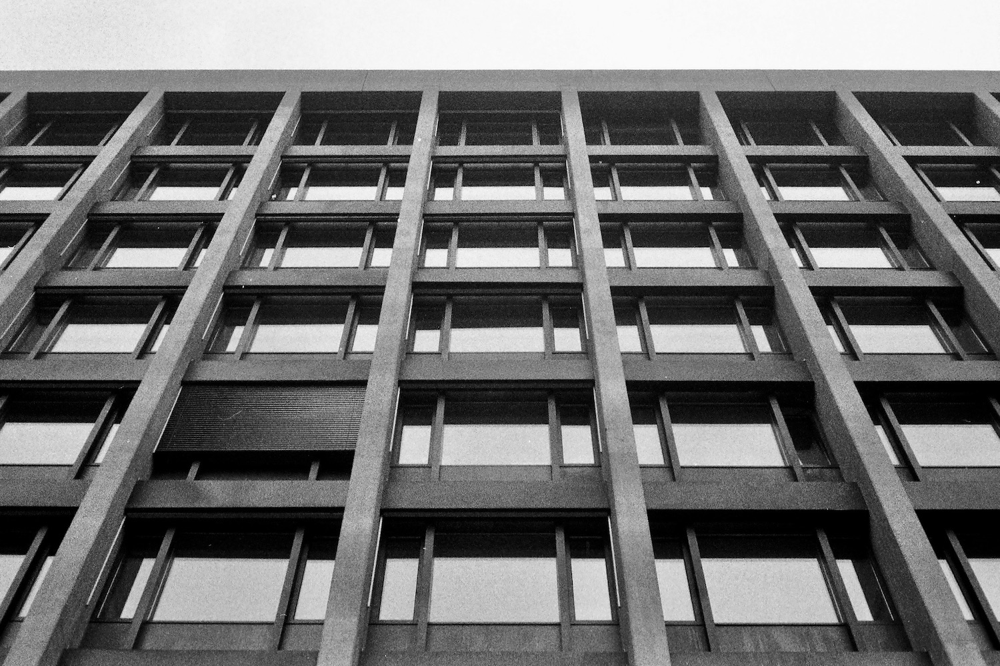
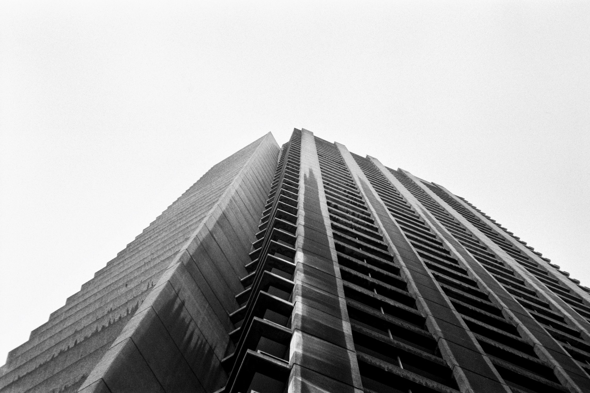
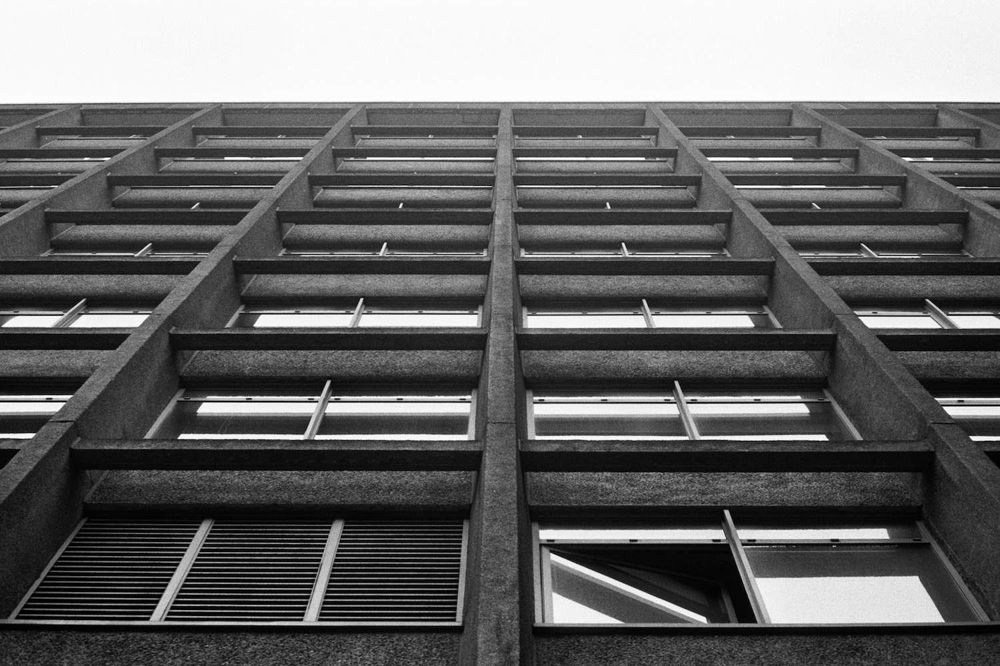
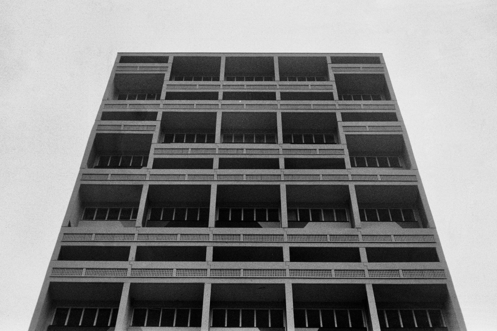
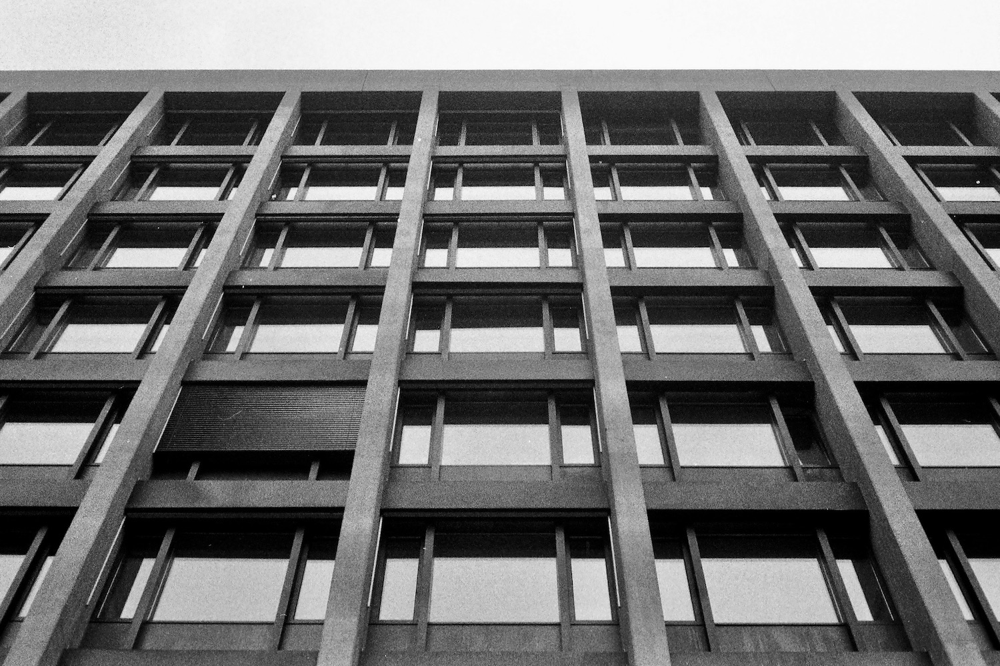
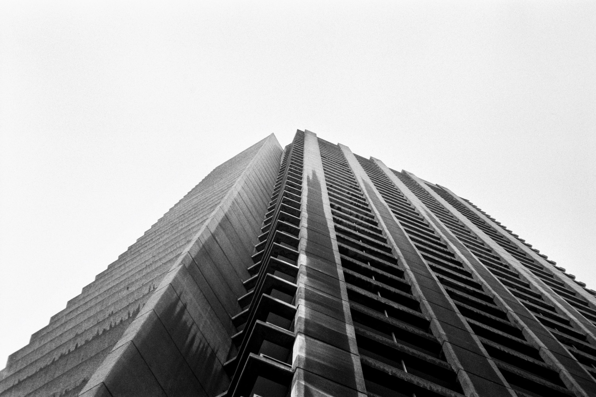
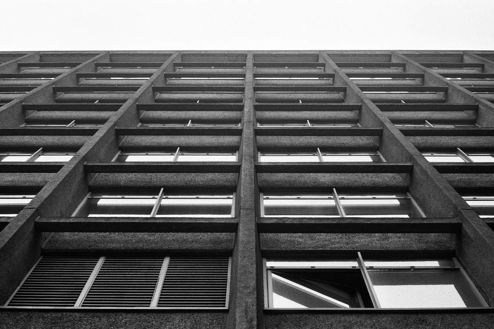

1
2
3
4
5
Yusen Building, Tokyo
Jinzhong Lin Office, 1978 Unité d'Habitation, Berlin
Le Corbusier, 1958 Trakt Nord 1 Universitätsspital, Zurich
Hans Weideli, Willy Gattiker, Ernst Kuster, 1978 Shakespeare Tower Barbican Estate, London
Chamberlin, Powell and Bon, 1976 Turnagain Ln, London
Jinzhong Lin Office, 1978 Unité d'Habitation, Berlin
Le Corbusier, 1958 Trakt Nord 1 Universitätsspital, Zurich
Hans Weideli, Willy Gattiker, Ernst Kuster, 1978 Shakespeare Tower Barbican Estate, London
Chamberlin, Powell and Bon, 1976 Turnagain Ln, London